同位置、同种子，比较原始基座与 v2 LoRA。18 组中文图表。
结论：外围覆盖改善，但中心能力下降。面积加权口径为 16.66% → 36.14%，与上述样本均值不同。固定单场景单种子；特征图是探索性分析，不提供因果证明。
完整说明 · 逐点数据 CSV · 图表与分析数据打包
总体增加 31 个成功点。改善主要来自外围，中心区域从 89% 降到 56%。
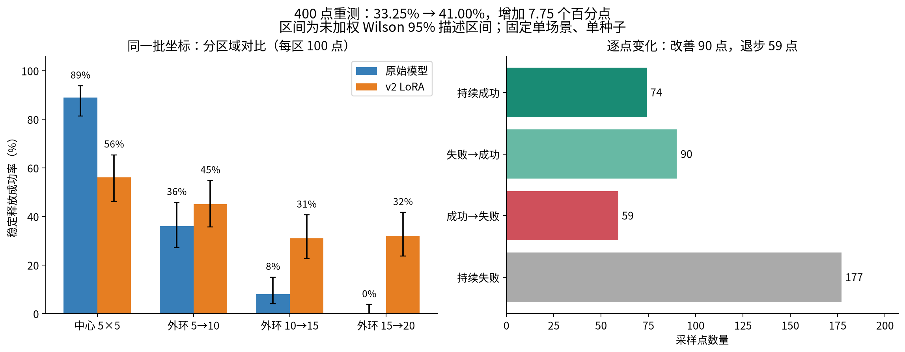
高清 PNG · 矢量 SVG · PDF
详细口径与限制见图中说明及 README.zh.txt。
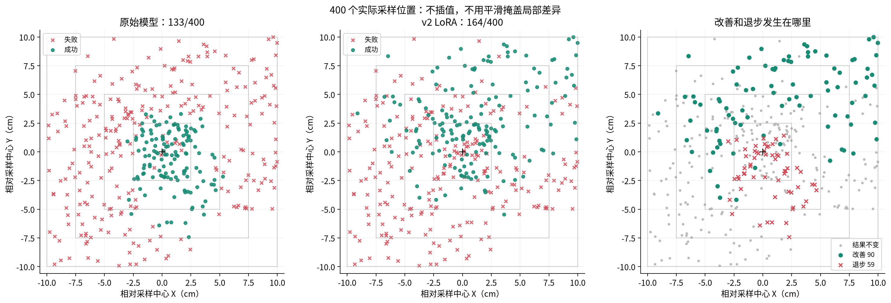
按原采样区域有效面积加权，数字为格内样本量。蓝色差值为改善、红色为退步。空白无样本；不进行插值。
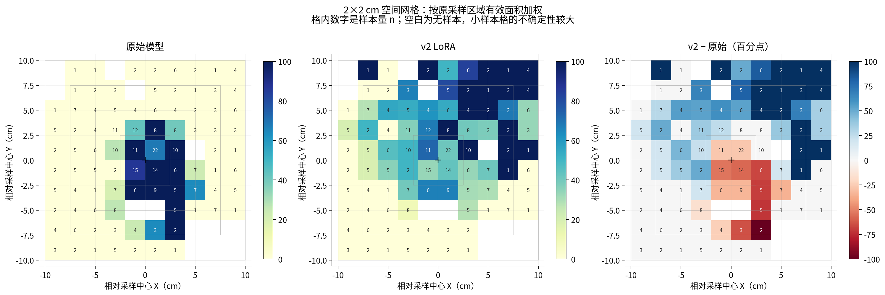
沿用原分析的官方示范白杯初始位置均值。未将专家机械臂位置混作杯子位置。
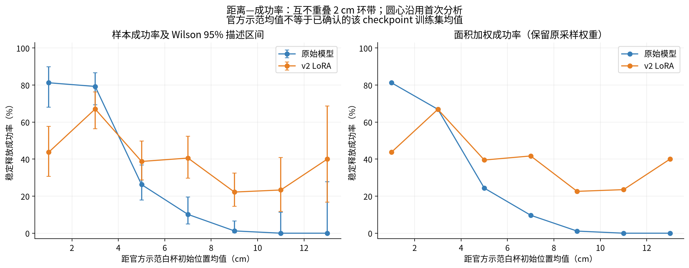
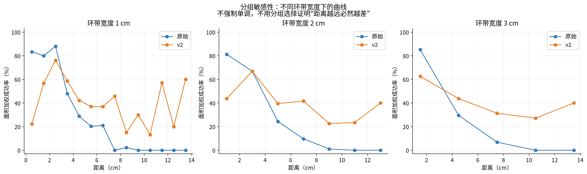
中心区域“持续抓持后丢失且未到盘边”从 10 条增到 29 条。状态分类不是因果诊断，未检测到抓持不等于物体没有被带起。
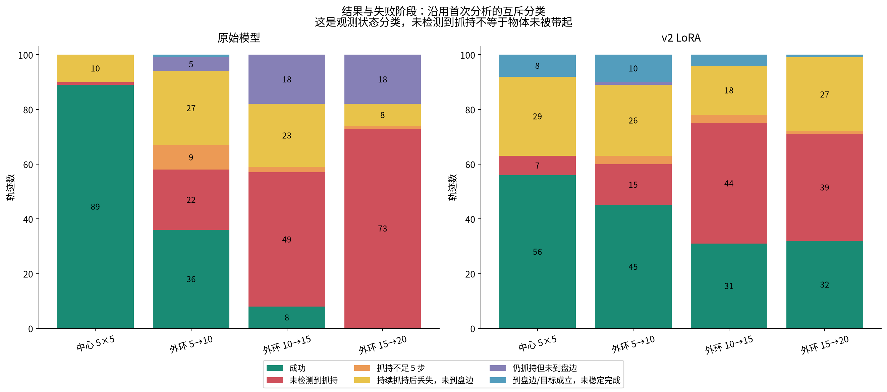
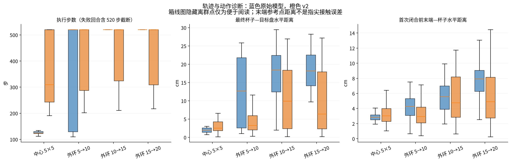
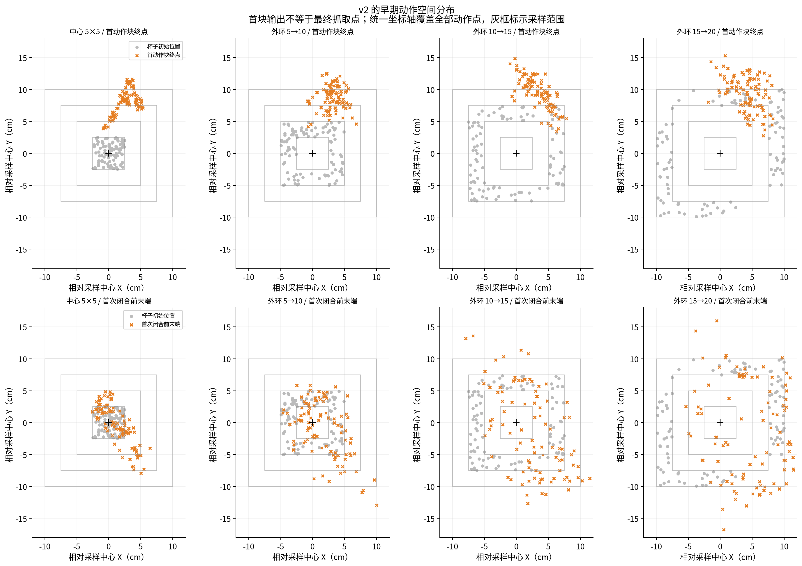
成功率曲线以全部 400 点为分母。查询延迟包含特征记录和写盘，不能当成纯推理速度。
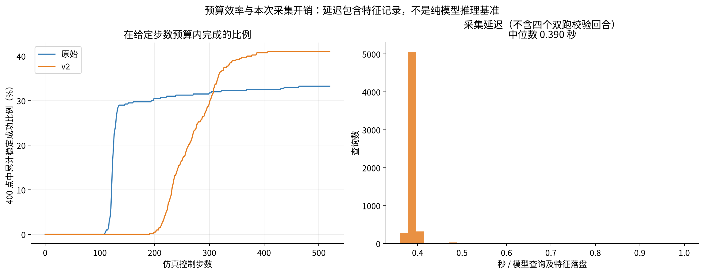
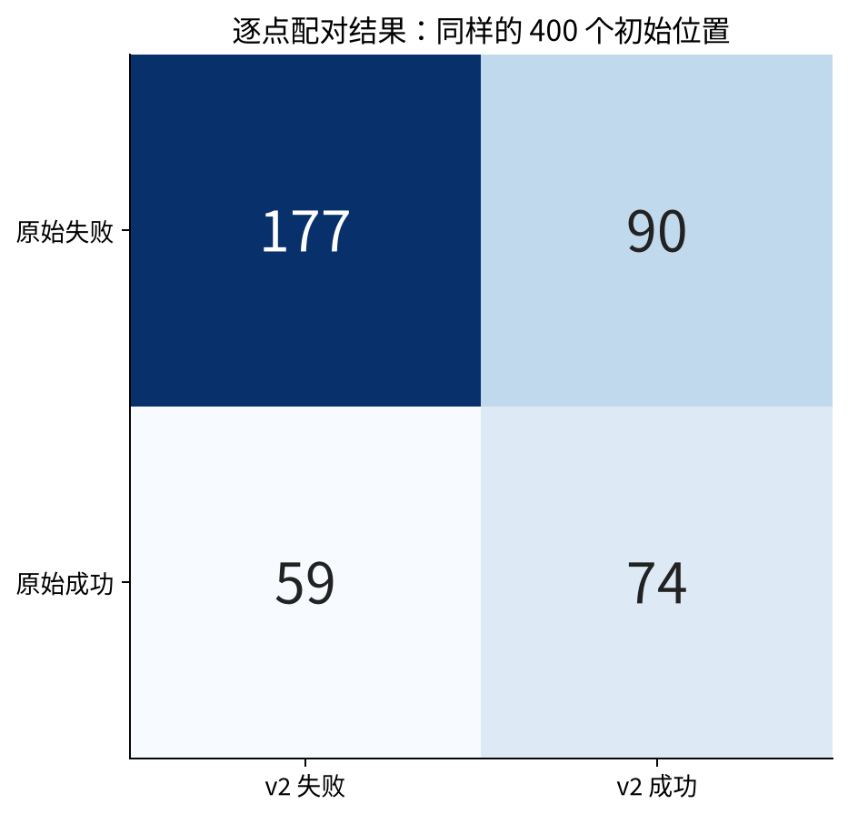
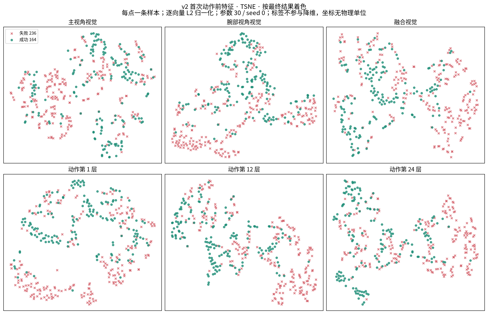
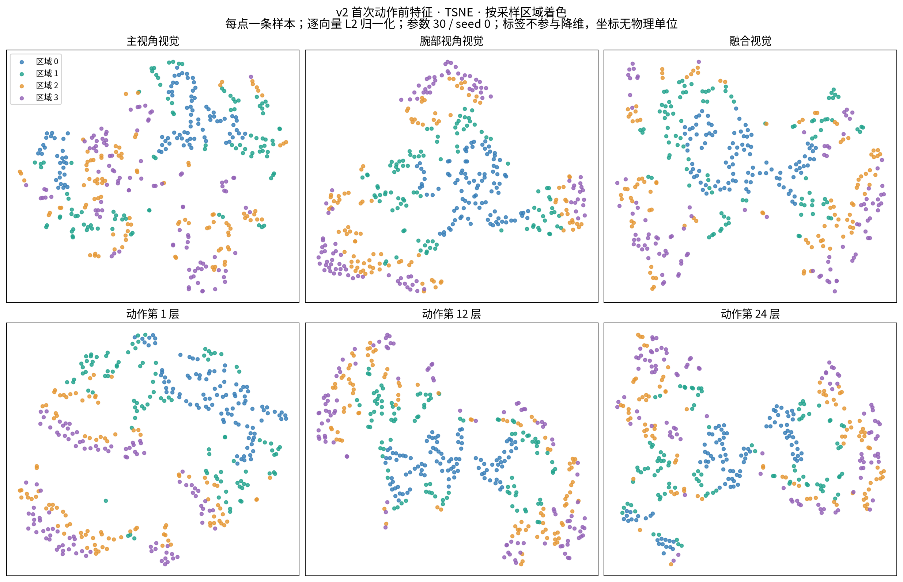
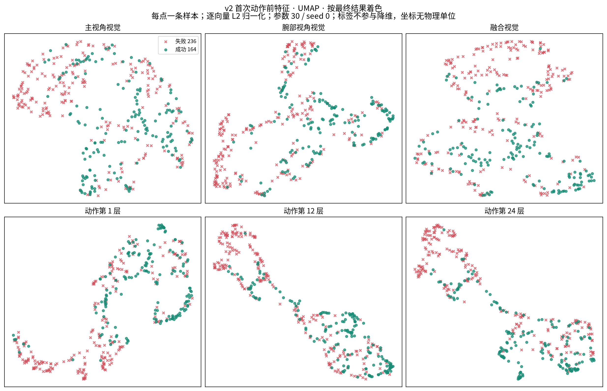
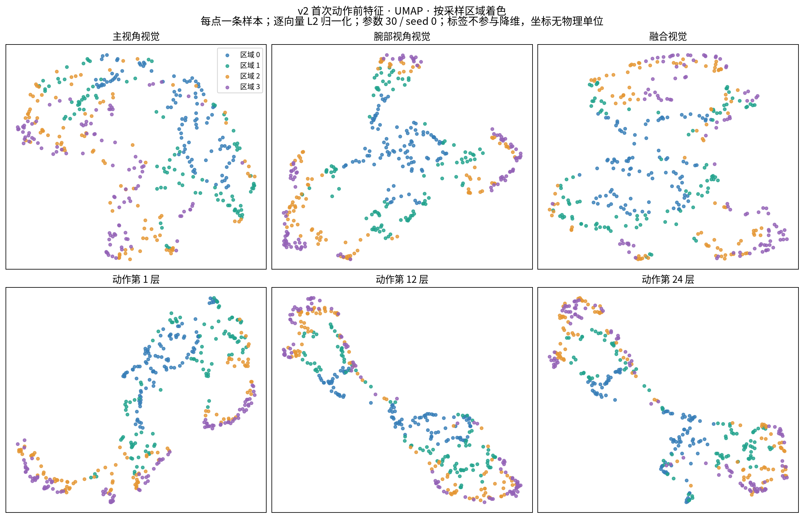
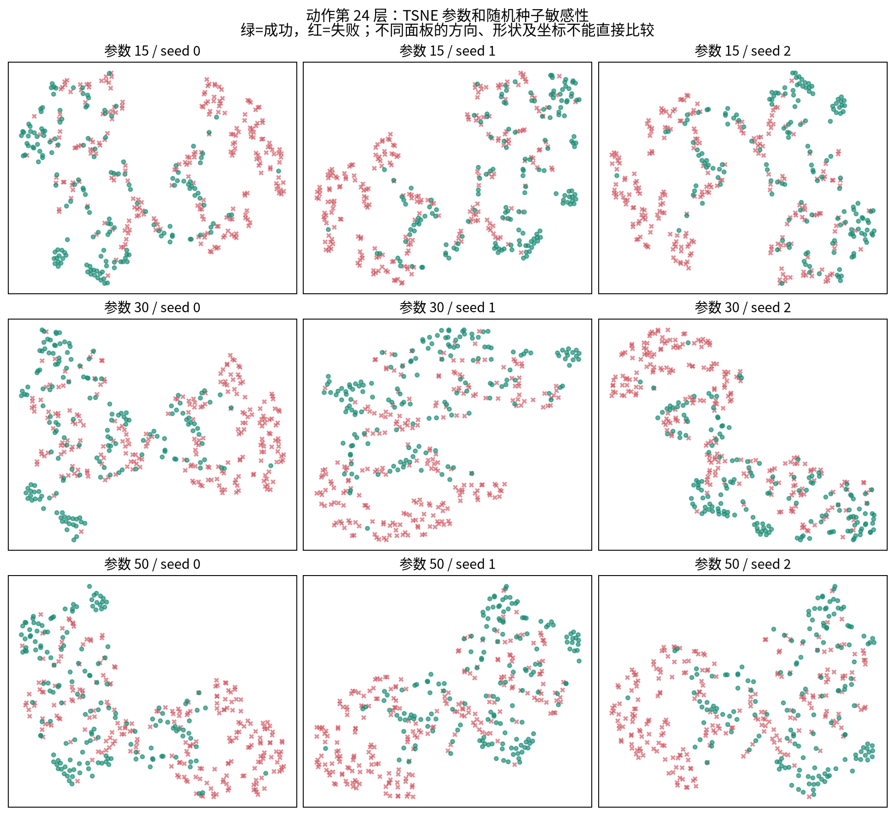
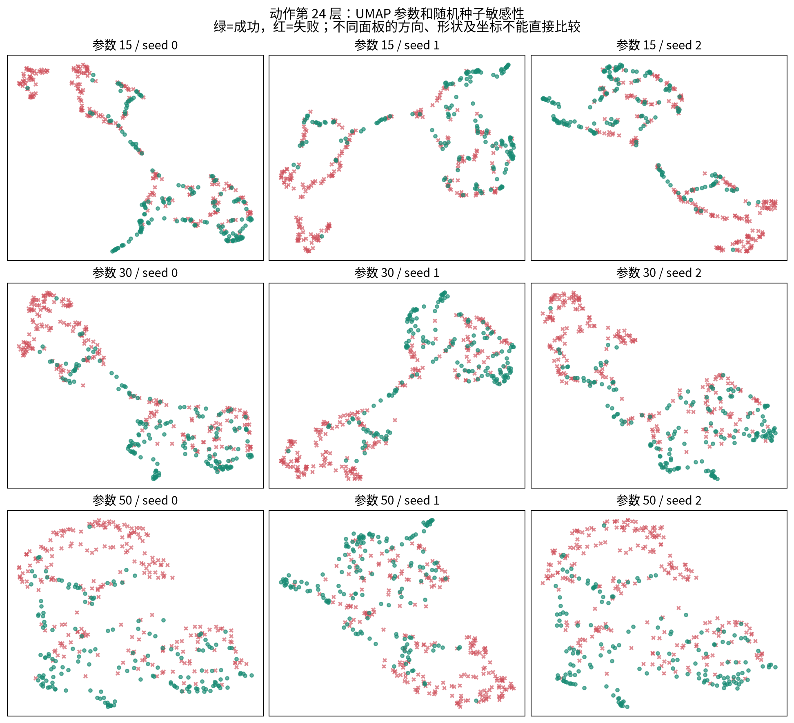
两模型共用空间划分，5 折、2.5cm 空间块，测试点周围 0.5cm 排除训练样本。岭回归 α=1 固定；不是之前报告的调参探针，因此不直接比较两份报告的误差数字。
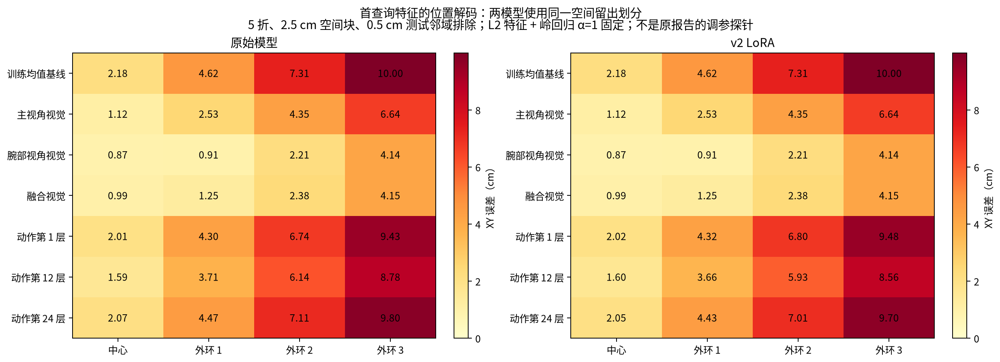
三组视觉特征逐元素一致；动作层特征改变。特征变化幅度不是性能改善的因果解释。
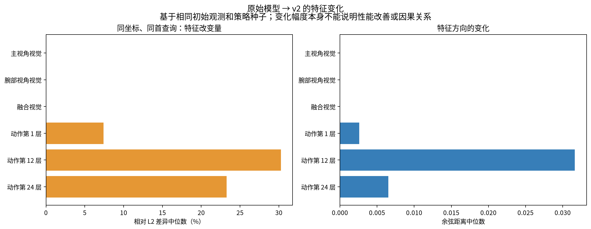